Docker：镜像、容器与 Compose
使用 桌面 化的 docker 实现 开发
1. 从仓库拉取：最直接的方式
如果官方已经把镜像推到了 Docker Hub 这样的公开镜像仓库，你就不用亲自构建了。
操作步骤：
打开终端（CMD 或 PowerShell）。
执行拉取命令：
bash
docker pull <镜像名>:<标签>
例如：docker pull nginx:1.25-alpine
完成后，在 Docker Desktop 的 Images 页面就能看到了。
2. 从蓝图构建：拿到Dockerfile
如果你拿到了Dockerfile和相关配置文件，这就相当于拿到了“施工图纸”，可以自己创建镜像。
操作步骤：
在终端里，进入 Dockerfile 所在的文件夹。
执行构建命令，-t 后面的参数是为新镜像指定的名字和标签：
bash
docker build -t <你指定的镜像名>:<标签> .
此命令不会直接下载文件。
构建完成，Images 列表里就会出现你指定的镜像。
3. 从成品导入：拿到.tar文件
如果你已经拿到了别人docker save命令导出的压缩包（比如 my-image.tar），这相当于拿到了一份打包好的“施工成品”，可以直接导入。
操作步骤：
打开终端，执行导入命令，并指向.tar文件的路径：
bash
docker load -i /path/to/your-image.tar
或者先进入文件所在目录，再执行docker load -i your-image.tar
导入成功后，用docker images命令查看，或者在 Docker Desktop 的 Images 列表里刷新一下就能看到了。
4. 多容器自动化：拿到docker-compose.yml
对于复杂的项目，别人通常会提供一个 docker-compose.yml 来一次性定义多个应用模块。
操作步骤：
准备好 docker-compose.yml 文件。如果 build 指令指向了一个或多个 Dockerfile，那么 Dockerfile 和相关文件也必须在同一目录下。
在 docker-compose.yml 所在的目录打开终端，执行启动命令：
bash
docker compose up -d
-d 表示在后台运行。Compose 会自动处理镜像的拉取和构建，具体逻辑由 docker-compose.yml 中的 image 和 build 指令共同决定。
使用Linux 中的docker实现容器化管理 ;
1. 从仓库拉取（最常见）
如果镜像在 Docker Hub 等公共仓库，可以直接拉取：
bash
docker pull [镜像名]:[标签]
例如，拉取一个 ASP.NET 示例应用：
bash
docker pull mcr.microsoft.com/dotnet/samples:aspnetapp
2. 从文件加载
如果你拿到的是一个 .tar 格式的镜像文件：
bash
docker load -i [镜像文件名].tar
验证镜像已存在
bash
docker images
# 或
docker image ls
🚀 第二步：从镜像创建并运行容器
这一步是核心，使用 docker run 命令。关键的配置都通过它的参数来完成。
配置需求 | 参数示例 | 说明 | 典型场景 |
端口映射 |
| 访问本机的 端口，就等于访问容器内的 端口。 | 必配项，让宿主机能访问到容器里的服务。 |
命名容器 |
| 给容器起个好记的名字，方便管理。 | 强烈推荐，否则 Docker 会随机生成一个难记的名字。 |
后台运行 |
| 让容器在后台静默运行，不占用当前终端。 | 部署 Web 服务或后台程序时使用。 |
数据持久化 |
| 将宿主机目录 挂载到容器内的 。容器内生成的数据会直接保存在宿主机上，删除容器也不会丢失。 | 关键配置，用于数据库、配置文件、日志等需要保存的数据。 |
环境变量 |
| 向容器传递环境变量，常用于配置数据库密码、应用模式等。 | 配置应用，如数据库初始密码。 |
基础运行示例：
bash
docker run -d --name my-web-app -p 8080:80 my-image:latest
上面这条命令的含义是：基于 my-image:latest 镜像，创建一个名为 my-web-app 的容器，让它后台运行 (-d)，并将你电脑的 8080 端口指向容器的 80 端口 (-p 8080:80)。
⚙️ 第三步：配置和运行
检查容器状态
1. bash
# 查看正在运行的容器
docker ps
# 查看所有容器（包括已停止的）
docker ps -a
查看容器日志
如果服务没跑起来，通过日志排查错误：
1. bashdocker logs [容器名或ID]
进入容器内部
有些调试需要进到容器“里面”去操作：
2. bashdocker exec -it [容器名或ID] /bin/bash
停止/启动/删除容器
3. bash
docker stop [容器名] # 停止容器
docker start [容器名] # 启动一个已停止的容器
docker rm [容器名] # 删除容器（需要先停止）
一旦命令忘记了
直接运行 --help 查看文档 ;
在昨天的课程中，我们学习了Linux操作系统的常见命令，在Linux上安装软件，以及如何在Linux上部署一个单体项目。大家想一想自己最大的感受是什么？
我相信，除了个别天赋异禀的同学以外，大多数同学都会有相同的感受，那就是麻烦。核心体现在三点：
- 命令太多了，记不住
- 软件安装包名字复杂，不知道去哪里找
- 安装和部署步骤复杂，容易出错
其实上述问题不仅仅是新手，即便是运维在安装、部署的时候一样会觉得麻烦、容易出错 。
特别是我们即将进入项目阶段的学习，项目动辄就是几台、几十台、甚至上百台服务需要部署，有些大型项目甚至达到成千上万台服务。而由于每台服务器的运行环境不同，你写好的安装流程、部署脚本并不一定在每个服务器都能正常运行，经常会出错。这就给系统的部署运维带来了很多困难 。
那么，有没有一种技术能够避免部署对服务器环境的依赖，减少复杂的部署流程呢？
答案是肯定的，这就是我们今天要学习的Docker技术。你会发现，有了Docker以后项目的部署如丝般顺滑，大大减少了运维工作量。
即便你对Linux不熟悉，你也能轻松部署各种常见软件、Java项目。
通过今天的学习，大家要能够达成下面的学习目标：
- 能利用Docker部署常见软件
- 能利用Docker打包并部署Java应用
- 理解Docker数据卷的基本作用
- 能看懂DockerCompose文件
快速入门
要想让Docker帮我们安装和部署软件，肯定要保证你的机器上有Docker。由于大家的操作系统各不相同，安装方式也不同。为了便于大家学习，我们统一在之前提供给大家的CentOS的虚拟机中已经安装了Docker，统一学习环境。
如果大家需要自己在别的机器上安装Docker环境，可以参照最后的 附录中的：Docker安装文档
部署MySQL
首先，我们利用Docker来安装一个MySQL软件，大家可以对比一下之前传统的安装方式，看看哪个效率更高一些。
如果是利用传统方式部署MySQL，大概的步骤有：
- 搜索并下载MySQL安装包
- 上传至Linux环境
- 解压和配置环境
- 安装
- 初始化和配置
而使用Docker安装，仅仅需要一步即可，在命令行输入下面的命令（建议采用CV大法）：
docker run -d \
--name mysql \
-p 3307:3306 \
-e TZ=Asia/Shanghai \
-e MYSQL_ROOT_PASSWORD=123 \
mysql:8
运行效果如图（在给大家提供的资料中，已经下载好了mysql 8版本的镜像）：
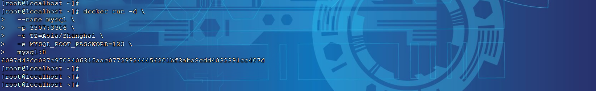
MySQL安装完毕！通过任意客户端工具即可连接到MySQL。
说明：
其实，当我们执行命令后，Docker做的第一件事情，是去自动搜索并下载了MySQL，然后会自动运行MySQL，我们完全不用插手，是非常方便的 。
而且，这种安装方式你完全不用考虑运行的操作系统环境，它不仅仅在CentOS系统是这样，在Ubuntu系统、macOS系统、甚至是装了WSL的Windows下，都可以使用这条命令来安装MySQL 。
要知道，不同操作系统下其安装包、运行环境是都不相同的！如果是手动安装，必须手动解决安装包不同、环境不同的、配置不同的问题！
而使用Docker，这些完全不用考虑。就是因为Docker会自动搜索并下载MySQL。
注意：
这里下载的不是安装包，而是镜像。镜像中不仅包含了MySQL本身，还包含了其运行所需要的环境、配置、系统级函数库。因此它在运行时就有自己独立的环境，就可以跨系统运行，也不需要手动再次配置环境了。这套独立运行的隔离环境我们称为容器。
说明：
- 镜像：英文是image
- 容器：英文是container
因此，Docker安装软件的过程，就是自动搜索下载镜像，然后创建并运行容器的过程。
Docker会根据命令中的镜像名称自动搜索并下载镜像，那么问题来了，它是去哪里搜索和下载镜像的呢？这些镜像又是谁制作的呢？
Docker官方提供了一个专门管理、存储镜像的网站，并对外开放了镜像上传、下载的权利。Docker官方提供了一些基础镜像，然后各大软件公司又在基础镜像基础上，制作了自家软件的镜像，全部都存放在这个网站。这个网站就成了Docker镜像交流的社区：https://hub\.docker\.com
基本上我们常用的各种软件都能在这个网站上找到，我们甚至可以自己制作镜像上传上去。【但是该网站，目前国内上不去了】
像这种提供存储、管理Docker镜像的服务器，被称为DockerRegistry，可以翻译为镜像仓库。DockerHub网站是官方仓库，阿里云、华为云会提供一些第三方仓库，我们也可以自己搭建私有的镜像仓库。
官方仓库在国外，下载速度较慢，一般我们都会使用第三方仓库提供的镜像加速功能，提高下载速度。而企业内部的机密项目，往往会采用私有镜像仓库。
总之，镜像的来源有两种：
- 基于官方基础镜像自己制作
- 直接去DockerRegistry下载
总结一下：
Docker本身包含一个后台服务，我们可以利用Docker命令告诉Docker服务，帮助我们快速部署指定的应用。Docker服务部署应用时，首先要去搜索并下载应用对应的镜像，然后根据镜像创建并允许容器，应用就部署完成了。
用一幅图表示如下：
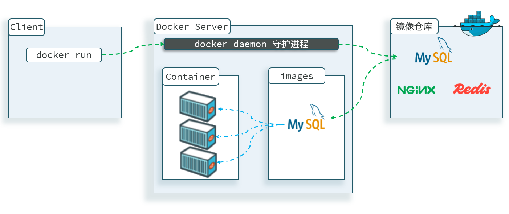
命令解读
利用Docker快速的安装了MySQL，非常的方便，不过我们执行的命令到底是什么意思呢？
docker run -d \
--name mysql \
-p 3307:3306 \
-e TZ=Asia/Shanghai \
-e MYSQL_ROOT_PASSWORD=123 \
mysql:8
解读：
docker run -d：创建并运行一个容器，-d则是让容器以后台进程运行--name mysql: 给容器起个名字叫mysql，你可以叫别的-p 3307:3306: 设置端口映射。容器是隔离环境，外界不可访问。但是可以将宿主机端口映射容器内到端口，当访问宿主机指定端口时，就是在访问容器内的端口了。
容器内端口往往是由容器内的进程决定，例如MySQL进程默认端口是3306，因此容器内端口一定是3306；而宿主机端口则可以任意指定，一般与容器内保持一致。
格式：
-p 宿主机端口:容器内端口，示例中就是将宿主机的3307映射到容器内的3306端口-``eTZ=Asia/Shanghai: 配置容器内进程运行时的一些参数格式：
-e KEY=VALUE，KEY和VALUE都由容器内进程决定案例中，
TZ=Asia/Shanghai是设置时区；MYSQL_ROOT_PASSWORD=123是设置MySQL默认密码mysql:8: 设置镜像名称，Docker会根据这个名字搜索并下载镜像格式：
REPOSITORY:TAG，例如mysql:8.0，其中REPOSITORY可以理解为镜像名，TAG是版本号在未指定
TAG的情况下，默认是最新版本，也就是mysql:latest
镜像的名称不是随意的，而是要到DockerRegistry中寻找，镜像运行时的配置也不是随意的，要参考镜像的帮助文档，这些在DockerHub网站或者软件的官方网站中都能找到。
如果我们要安装其它软件，也可以到DockerRegistry中寻找对应的镜像名称和版本，阅读相关配置即可。
Docker基础
接下来，我们一起来学习Docker使用的一些基础知识，为将来部署项目打下基础。
常见命令
命令介绍
其中，比较常见的命令有：
命令 | 说明 | 文档地址 |
docker pull | 拉取镜像 | |
docker push | 推送镜像到DockerRegistry | |
docker images | 查看本地镜像 | |
docker rmi | 删除本地镜像 | |
docker run | 创建并运行容器（不能重复创建） | |
docker stop | 停止指定容器 | |
docker start | 启动指定容器 | |
docker restart | 重新启动容器 | |
docker rm | 删除指定容器 | |
docker ps | 查看容器 | |
docker logs | 查看容器运行日志 | |
docker exec | 进入容器 | |
docker save | 保存镜像到本地压缩文件 | |
docker load | 加载本地压缩文件到镜像 | |
docker inspect | 查看容器详细信息 |
用一副图来表示这些命令的关系：
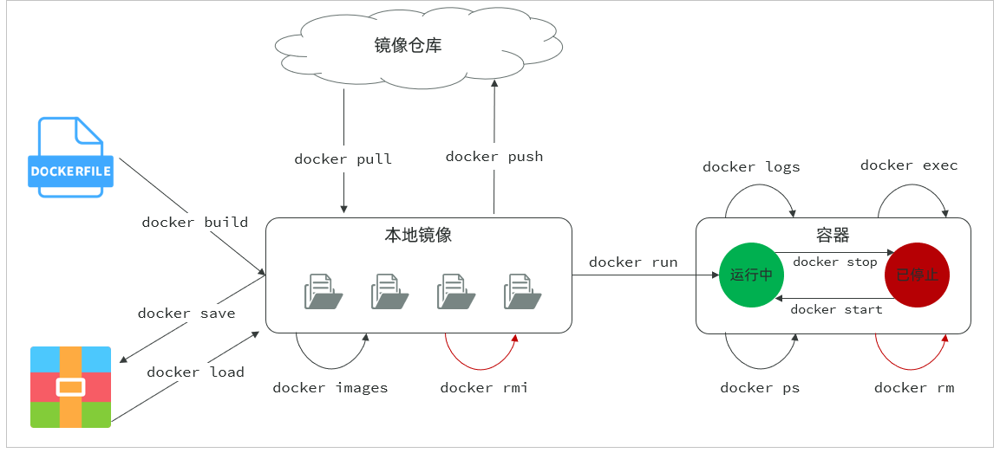
补充：
默认情况下，每次重启虚拟机我们都需要手动启动Docker和Docker中的容器。通过命令可以实现开机自启：
# Docker开机自启
systemctl enable docker
# Docker容器开机自启
docker update --restart=always [容器名/容器id]
演示
我们以Nginx为例给大家演示上述命令。
# 第1步，去DockerHub查看nginx镜像仓库及相关信息
# 第2步，拉取Nginx镜像 (比较耗时)
docker pull nginx:1.20.2
# 第3步，查看镜像
docker images
# 第4步，创建并允许Nginx容器
docker run -d --name nginx -p 80:80 nginx
# 第5步，查看运行中容器
docker ps
# 也可以加格式化方式访问，格式会更加清爽
docker ps --format "table {{.ID}}\t{{.Image}}\t{{.Ports}}\t{{.Status}}\t{{.Names}}"
# 第6步，访问网页，地址：http://虚拟机地址
# 第7步，停止容器
docker stop nginx
# 第8步，查看所有容器
docker ps -a --format "table {{.ID}}\t{{.Image}}\t{{.Ports}}\t{{.Status}}\t{{.Names}}"
# 第9步，再次启动nginx容器
docker start nginx
# 第10步，再次查看容器
docker ps --format "table {{.ID}}\t{{.Image}}\t{{.Ports}}\t{{.Status}}\t{{.Names}}"
# 第11步，查看容器详细信息
docker inspect nginx
# 第12步，进入容器,查看容器内目录
docker exec -it nginx bash
# 或者，可以进入MySQL
docker exec -it mysql mysql -uroot -p
# 第13步，删除容器
docker rm nginx
# 发现无法删除，因为容器运行中，强制删除容器
docker rm -f nginx
数据卷
容器是隔离环境，容器内程序的文件、配置、运行时产生的容器都在容器内部，我们要读写容器内的文件非常不方便。大家思考几个问题：
- 如果要升级MySQL版本，需要销毁旧容器，那么数据岂不是跟着被销毁了？
- MySQL、Nginx容器运行后，如果我要修改其中的某些配置该怎么办？
- 我想要让Nginx代理我的静态资源怎么办？
因此，容器提供程序的运行环境，但是 程序运行产生的数据、程序运行依赖的配置都应该与容器解耦。
介绍
数据卷（volume）是一个虚拟目录，是容器内目录与宿主机目录之间映射的桥梁。
以Nginx为例，我们知道Nginx中有两个关键的目录：
html：放置一些静态资源conf：放置配置文件
如果我们要让Nginx代理我们的静态资源，最好是放到html目录；如果我们要修改Nginx的配置，最好是找到conf下的nginx.conf文件。
但遗憾的是，容器运行的Nginx所有的文件都在容器内部。所以我们必须利用数据卷将两个目录与宿主机目录关联，方便我们操作。
如图：
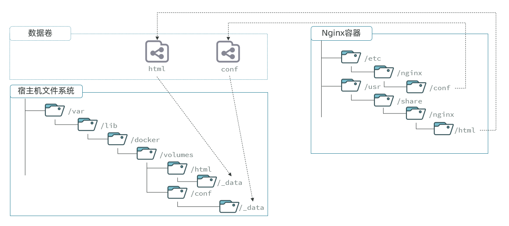
在上图中：
- 我们创建了两个数据卷：
conf、html - Nginx容器内部的
conf目录和html目录分别与两个数据卷关联。 - 而数据卷conf和html分别指向了宿主机的
/var/lib/docker/volumes/conf/_data目录和/var/lib/docker/volumes/html/``_data目录
这样以来，容器内的conf和html目录就 与宿主机的conf和html目录关联起来，我们称为挂载。
此时，我们操作宿主机的/var/lib/docker/volumes/html/_data就是在操作容器内的/usr/share/nginx/html/``_data目录。只要我们将静态资源放入宿主机对应目录，就可以被Nginx代理了。
小提示：
/var/lib/docker/volumes这个目录就是默认的存放所有容器数据卷的目录，其下再根据数据卷名称创建新目录，格式为/数据卷名/_data。
为什么不让容器目录直接指向宿主机目录呢？
使用 inspect 可以查看挂载卷的 详细信息
- 因为直接指向宿主机目录就与宿主机强耦合了，如果切换了环境，宿主机目录就可能发生改变了。由于容器一旦创建，目录挂载就无法修改，这样容器就无法正常工作了。
- 但是容器指向数据卷，一个逻辑名称，而数据卷再指向宿主机目录，就不存在强耦合。如果宿主机目录发生改变，只要改变数据卷与宿主机目录之间的映射关系即可。
不过，我们通过由于数据卷目录比较深，不好寻找，通常我们也允许让容器直接与宿主机目录挂载而不使用数据卷，具体参考2.2.3小节。
命令
数据卷的相关命令有：
命令 | 说明 | 文档地址 |
docker volume create | 创建数据卷 | |
docker volume ls | 查看所有数据卷 | |
docker volume rm | 删除指定数据卷 | |
docker volume inspect | 查看某个数据卷的详情 | |
docker volume prune | 清除数据卷 |
注意：容器与数据卷的挂载要在创建容器时配置，对于创建好的容器，是不能设置数据卷的。而且创建容器的过程中，数据卷会自动创建。
教学演示环节：演示一下nginx的html目录挂载
# 1.首先创建容器并指定数据卷，注意通过 -v 参数来指定数据卷
docker run -d --name nginx -p 80:80 -v html:/usr/share/nginx/html nginx:1.20.2
# 2.然后查看数据卷
docker volume ls
# 3.查看数据卷详情
docker volume inspect html
# 4.查看/var/lib/docker/volumes/html/_data目录
ll /var/lib/docker/volumes/html/_data
# 5.进入该目录，并随意修改index.html内容
cd /var/lib/docker/volumes/html/_data
vi index.html
# 6.打开页面，查看效果
# 7.进入容器内部，查看/usr/share/nginx/html目录内的文件是否变化
docker exec -it nginx bash
教学演示环节：演示一下MySQL的匿名数据卷
# 1.查看MySQL容器详细信息
docker inspect mysql
# 关注其中.Config.Volumes部分和.Mounts部分
我们关注两部分内容，第一是.Config.Volumes部分：
{
"Config": {
// ... 略
"Volumes": {
"/var/lib/mysql": {}
}
// ... 略
}
}
可以发现这个容器声明了一个本地目录，需要挂载数据卷，但是数据卷未定义。这就是匿名卷。
然后，我们再看结果中的.Mounts部分：
{
"Mounts": [
{
"Type": "volume",
"Name": "29524ff09715d3688eae3f99803a2796558dbd00ca584a25a4bbc193ca82459f",
"Source": "/var/lib/docker/volumes/29524ff09715d3688eae3f99803a2796558dbd00ca584a25a4bbc193ca82459f/_data",
"Destination": "/var/lib/mysql",
"Driver": "local",
}
]
}
可以发现，其中有几个关键属性：
- Name：数据卷名称。由于定义容器未设置容器名，这里的就是匿名卷自动生成的名字，一串hash值。
- Source：宿主机目录
- Destination : 容器内的目录
上述配置是将容器内的/var/lib/mysql这个目录，与数据卷29524ff09715d3688eae3f99803a2796558dbd00ca584a25a4bbc193ca82459f挂载。于是在宿主机中就有了/var/lib/docker/volumes/29524ff09715d3688eae3f99803a2796558dbd00ca584a25a4bbc193ca82459f/_data这个目录。这就是匿名数据卷对应的目录，其使用方式与普通数据卷没有差别。
接下来，可以查看该目录下的MySQL的data文件：
ls -l /var/lib/docker/volumes/29524ff09715d3688eae3f99803a2796558dbd00ca584a25a4bbc193ca82459f/_data
注意：每一个不同的镜像，将来创建容器后内部有哪些目录可以挂载，可以参考DockerHub对应的页面 。
挂载本地目录或文件
可以发现，数据卷的目录结构较深，如果我们去操作数据卷目录会不太方便。在很多情况下，我们会直接将容器目录与宿主机指定目录挂载。挂载语法与数据卷类似：
# 挂载本地目录
-v 本地目录:容器内目录
# 挂载本地文件
-v 本地文件:容器内文件
注意：本地目录或文件必须以 / 或 ./开头，如果直接以名字开头，会被识别为数据卷名而非本地目录名。
例如：
-v mysql:/var/lib/mysql # 会被识别为一个数据卷叫mysql，运行时会自动创建这个数据卷
-v ./mysql:/var/lib/mysql # 会被识别为当前目录下的mysql目录，运行时如果不存在会创建目录
教学演示，删除并重新创建mysql容器，并完成本地目录挂载：
- 挂载
/root/mysql/data到容器内的/var/lib/mysql目录 - 挂载
/root/mysql/init到容器内的/docker-entrypoint-initdb.d目录（初始化的SQL脚本目录） - 挂载
/root/mysql/conf到容器内的/etc/mysql/conf.d目录（这个是MySQL配置文件目录）
在课前资料中已经准备好了mysql 的init目录、conf目录、data目录，可以直接将其上传到Linux服务器中的 /root/mysql 目录下。
最终执行的指令如下：
docker run -d \
--name mysql \
-p 3307:3306 \
-e MYSQL_ROOT_PASSWORD=123 \
-e TZ=Asia/Shanghai \
-v /root/mysql/data:/var/lib/mysql \
-v /root/mysql/init:/docker-entrypoint-initdb.d \
-v /root/mysql/conf:/etc/mysql/conf.d \
mysql:8
自定义镜像
前面我们一直在使用别人准备好的镜像，那如果我要部署一个Java项目，把它打包为一个镜像该怎么做呢？ 那接下来，我们就来介绍一下如何自定义镜像。
镜像结构
要想自己构建镜像，必须先了解镜像的结构。
之前我们说过，镜像之所以能让我们快速跨操作系统部署应用而忽略其运行环境、配置，就是因为镜像中包含了程序运行需要的系统函数库、环境、配置、依赖。
因此，自定义镜像本质就是依次准备好程序运行的基础环境、依赖、应用本身、运行配置等文件，并且打包而成。
举个例子，我们要从0部署一个Java应用，大概流程是这样：
- 准备一个linux服务（CentOS或者Ubuntu均可）
- 安装并配置JDK
- 上传Jar包
- 运行jar包
那因此，我们打包镜像也是分成这么几步：
- 准备Linux运行环境（java项目并不需要完整的操作系统，仅仅是基础运行环境即可）
- 安装并配置JDK
- 拷贝jar包
- 配置启动脚本
上述步骤中的每一次操作其实都是在生产一些文件（系统运行环境、函数库、配置最终都是磁盘文件），所以镜像就是一堆文件的集合。
但需要注意的是，镜像文件不是随意堆放的，而是按照操作的步骤分层叠加而成，每一层形成的文件都会单独打包并标记一个唯一id，称为Layer（层）。这样，如果我们构建时用到的某些层其他人已经制作过，就可以直接拷贝使用这些层，而不用重复制作。
例如，第一步中需要的Linux运行环境，通用性就很强，所以Docker官方就制作了这样的只包含Linux运行环境的镜像。我们在制作java镜像时，就无需重复制作，直接使用Docker官方提供的CentOS或Ubuntu镜像作为基础镜像。然后再搭建其它层即可，这样逐层搭建，最终整个Java项目的镜像结构如图所示：
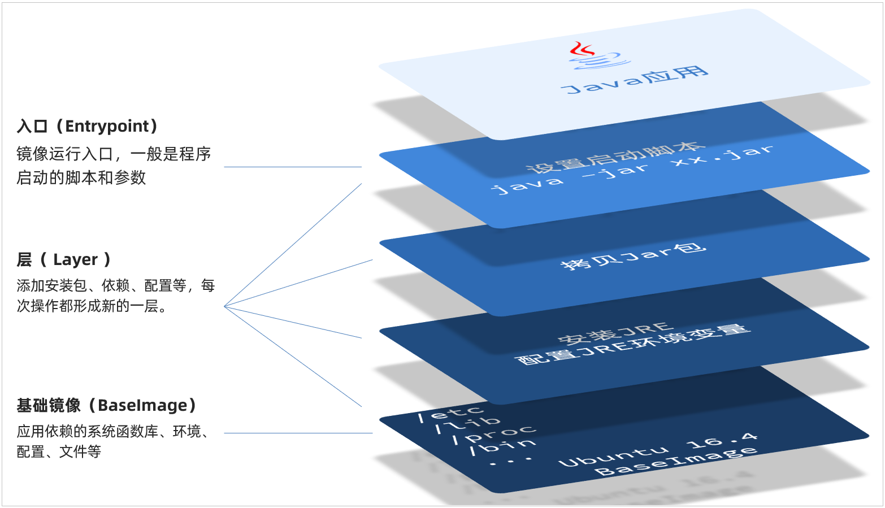
Dockerfile
由于制作镜像的过程中，需要逐层处理和打包，比较复杂，所以Docker就提供了自动打包镜像的功能。我们只需要将打包的过程，每一层要做的事情用固定的语法写下来，交给Docker去执行即可。而这种记录镜像结构的文件就称为Dockerfile。
其中的语法比较多，比较常用的有：
指令 | 说明 | 示例 |
FROM | 指定基础镜像 |
|
ENV | 设置环境变量，可在后面指令使用 |
|
COPY | 拷贝本地文件到镜像的指定目录 |
|
RUN | 执行Linux的shell命令，一般是安装过程的命令 |
|
EXPOSE | 指定容器运行时监听的端口，是给镜像使用者看的 | EXPOSE 8080 |
ENTRYPOINT | 镜像中应用的启动命令，容器运行时调用 | ENTRYPOINT java -jar xx.jar |
例如，要基于 centos:7 镜像来构建一个Java应用，其Dockerfile内容如下：
# 使用 CentOS 7 作为基础镜像
FROM centos:7
# 添加 JDK 到镜像中
COPY jdk17.tar.gz /usr/local/
RUN tar -xzf /usr/local/jdk17.tar.gz -C /usr/local/ && rm /usr/local/jdk17.tar.gz
# 设置环境变量
ENV JAVA_HOME=/usr/local/jdk-17.0.10
ENV PATH=$JAVA_HOME/bin:$PATH
# 创建应用目录
RUN mkdir -p /app
WORKDIR /app
# 复制应用 JAR 文件到容器
COPY app.jar app.jar
# 暴露端口
EXPOSE 8080
# 运行命令
ENTRYPOINT ["java","-Djava.security.egd=file:/dev/./urandom","-jar","/app/app.jar"]
Dockerfile文件编写好了之后，就可以使用如下命令来构建镜像了。
docker build -t 镜像名 .
- -t ：是给镜像起名，格式依然是repository:tag的格式，不指定tag时，默认为latest
- . ：是指定Dockerfile所在目录，如果就在当前目录，则指定为"."
演示:
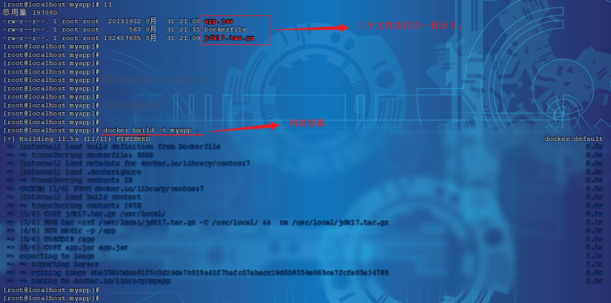
网络
使用下面的 方法自动 创建桥接网络 ;
1. docker network create svhwliao：创建自定义桥接网络，同网络内容器可通过容器名互访
2. docker network connect svhwliao 容器名：将已有容器加入该网络
补充：新建容器时可直接用 docker run --network svhwliao 启动，自动入网。查看网络详情用 docker network inspect svhwliao。
上节课我们创建了一个Java项目的容器，而Java项目往往需要访问其它各种中间件，例如MySQL、Redis等。现在，我们的容器之间能否互相访问呢？我们来测试一下
首先，我们查看下MySQL容器的详细信息，重点关注其中的网络IP地址：
# 1.用基本命令，寻找Networks.bridge.IPAddress属性
docker inspect mysql
# 也可以使用format过滤结果
docker inspect --format='{{range .NetworkSettings.Networks}}{{println .IPAddress}}{{end}}' mysql
# 得到IP地址如下：
172.17.0.2
# 2.然后通过命令进入dd容器
docker exec -it dd bash
# 3.在容器内，通过ping命令测试网络
ping 172.17.0.2
# 结果
PING 172.17.0.2 (172.17.0.2) 56(84) bytes of data.
64 bytes from 172.17.0.2: icmp_seq=1 ttl=64 time=0.053 ms
64 bytes from 172.17.0.2: icmp_seq=2 ttl=64 time=0.059 ms
64 bytes from 172.17.0.2: icmp_seq=3 ttl=64 time=0.058 ms
发现可以互联，没有问题。
但是，容器的网络IP其实是一个虚拟的IP，其值并不固定与某一个容器绑定，如果我们在开发时写死某个IP，而在部署时很可能MySQL容器的IP会发生变化，连接会失败。
常见命令有：
命令 | 说明 |
docker network create | 创建一个网络 |
docker network ls | 查看所有网络 |
docker network rm | 删除指定网络 |
docker network prune | 清除未使用的网络 |
docker network connect | 使指定容器连接加入某网络 |
docker network disconnect | 使指定容器连接离开某网络 |
docker network inspect | 查看网络详细信息 |
**教学演示：**自定义网络
# 1.首先通过命令创建一个网络
docker network create itheima
# 2.然后查看网络
docker network ls
# 结果：
NETWORK ID NAME DRIVER SCOPE
639bc44d0a87 bridge bridge local
403f16ec62a2 itheima bridge local
0dc0f72a0fbb host host local
cd8d3e8df47b none null local
# 其中，除了itheima以外，其它都是默认的网络
# 3.让 myapp 和 mysql 都加入该网络
# 3.1.mysql容器，加入 itheima 网络
docker network connect itheima mysql
# 3.2.myapp容器，也就是我们的java项目, 加入 itheima 网络
docker network connect itheima myapp
# 4.进入dd容器，尝试利用别名访问db
# 4.1.进入容器
docker exec -it myapp bash
# 4.2.用容器名访问
ping mysql
# 结果：
PING mysql (172.18.0.2) 56(84) bytes of data.
64 bytes from mysql.itheima (172.18.0.2): icmp_seq=1 ttl=64 time=0.044 ms
64 bytes from mysql.itheima (172.18.0.2): icmp_seq=2 ttl=64 time=0.054 ms
OK，现在无需记住IP地址也可以实现容器互联了。
项目部署
部署服务端
需求：将我们开发的 tlias-web-management 项目打包为镜像，并部署。
步骤：
修改项目的配置文件，修改数据库服务地址（打包package）。
编写Dockerfile文件（AI辅助）。
构建Docker镜像，部署Docker容器，运行测试。
1). 修改项目的配置文件，修改数据库服务地址（打包package）。

然后，执行maven中的package生命周期，进行打包(跳过测试)，并将打包后的jar包命名为 tlias.jar 。
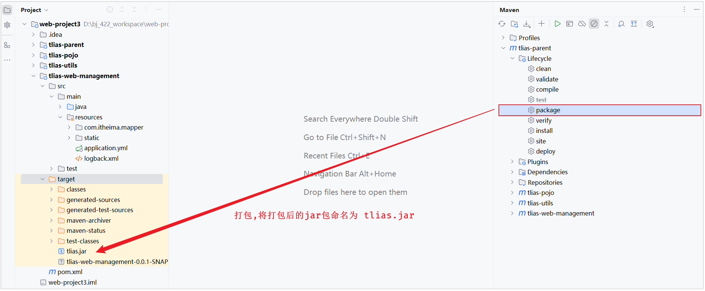
2). 编写Dockerfile文件（AI辅助）
文件名 Dockerfile:
# 使用 CentOS 7 作为基础镜像
FROM centos:7
# 添加 JDK 到镜像中
COPY jdk17.tar.gz /usr/local/
RUN tar -xzf /usr/local/jdk17.tar.gz -C /usr/local/ && rm /usr/local/jdk17.tar.gz
# 设置环境变量
ENV JAVA_HOME=/usr/local/jdk-17.0.10
ENV PATH=$JAVA_HOME/bin:$PATH
# 阿里云OSS环境变量
ENV OSS_ACCESS_KEY_ID=YOUR_OSS_ACCESS_KEY_ID
ENV OSS_ACCESS_KEY_SECRET=YOUR_OSS_ACCESS_KEY_SECRET
#统一编码
ENV LANG=en_US.UTF-8
ENV LANGUAGE=en_US:en
ENV LC_ALL=en_US.UTF-8
# 创建应用目录
RUN mkdir -p /tlias
WORKDIR /tlias
# 复制应用 JAR 文件到容器
COPY tlias.jar tlias.jar
# 暴露端口
EXPOSE 8080
# 运行命令
ENTRYPOINT ["java","-jar","/tlias/tlias.jar"]
使用 docker build -t 镜像名 ; docker images ; 保留自己需要使用 的 镜像 ;
由于项目要运行，需要依赖jdk的环境，所以这里我们需要将tlias.jar，jdk17.tar.gz，Dockerfile三个文件，上传到Linux服务器的 /root/tlias 目录下（如果没有这个目录，提前创建好）。
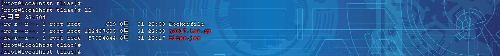
3). 构建Docker镜像，部署Docker容器，运行测试。
- 构建Docker镜像
docker build -t tlias:1.0 .

- 部署Docker容器
docker run -d --name tlias-server --network itheima -p 8080:8080 tlias:1.0
--network itheima ：将创建的容器，加入到itheima网络，就可以和itheima网络中的容器通信了。
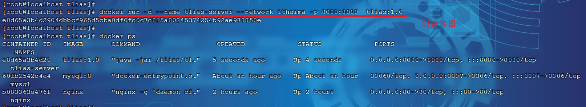
通过 docker logs -f 容器名，就可以查看容器的运行日志。

这样后端服务，就已经启动起来了。
部署前端
需求：创建一个新的nginx容器，将资料中提供的前端项目的静态资源部署到nginx中。
步骤：
在宿主机上准备静态文件及配置文件存放目录(在
/usr/local目录下创建tlias-web目录)。
-v /usr/local/tlias-web/html:/usr/share/nginx/html
-v /usr/local/tlias-web/conf/nginx.conf:/etc/nginx/nginx.conf
- 部署nginx容器
1). 部署nginx容器（设置目录映射）。
- 将资 资料/04. 项目部署/前端项目 中的 目录
html和 配置文件存放目录conf，上传至服务器端的/usr/local/tlias-web目录下。 - 注意要转化创建的 网络配置要到 新创建出的 网络中;
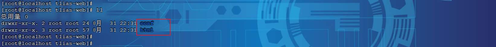
- 执行如下命令，部署nginx容器
docker run -d \
--name nginx-tlias \
-v /usr/local/tlias-web/html:/usr/share/nginx/html \
-v /usr/local/tlias-web/conf/nginx.conf:/etc/nginx/nginx.conf \
--network itheima \
-p 80:80 \
nginx:1.20.2
前后端都部署完毕后，就可以打开浏览器，来测试一下。访问前端的nginx服务器 。
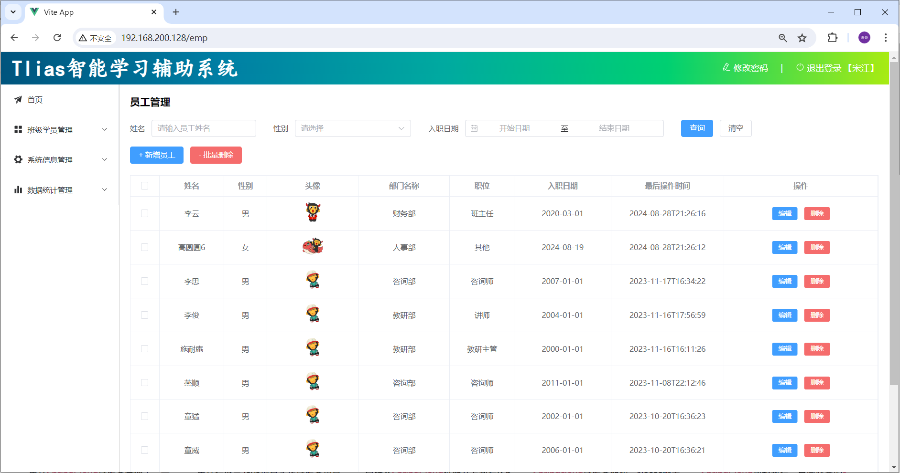
DockerCompose
大家可以看到，我们部署一个简单的java项目，其中包含3个容器：
- MySQL
- Nginx
- Java项目
而稍微复杂的项目，其中还会有各种各样的其它中间件，需要部署的东西远不止3个。如果还像之前那样手动的逐一部署，就太麻烦了。
而Docker Compose就可以帮助我们实现多个相互关联的Docker容器的快速部署。它允许用户通过一个单独的 docker-compose.yml 模板文件（YAML 格式）来定义一组相关联的应用容器。
基本语法
docker-compose文件中可以定义多个相互关联的应用容器，每一个应用容器被称为一个服务（service）。由于service就是在定义某个应用的运行时参数，因此与docker run参数非常相似。
举例来说，用docker run部署MySQL的命令如下：
docker run -d \
--name nginx-tlias \
-p 80:80 \
-v /usr/local/app/html:/usr/share/nginx/html \
-v /usr/local/app/conf/nginx.conf:/etc/nginx/nginx.conf \
--network itheima \
nginx:1.20.2
如果用docker-compose.yml文件来定义，就是这样：
services:
mysql:
image: "nginx:1.20.2"
container_name: nginx-tlias
ports:
- "80:80"
volumes:
- "/usr/local/app/html:/usr/share/nginx/html"
- "/usr/local/app/conf/nginx.conf:/etc/nginx/nginx.conf"
networks:
- itheima
networks:
itheima:
name: itheima
对比如下：
docker run 参数 | docker compose 指令 | 说明 |
--name | container_name | 容器名称 |
-p | ports | 端口映射 |
-e | environment | 环境变量 |
-v | volumes | 数据卷配置 |
--network | networks | 网络 |
明白了其中的对应关系，相信编写docker-compose文件应该难不倒大家。
services:
mysql:
image: mysql:8
container_name: mysql
ports:
- "3307:3306"
environment:
TZ: Asia/Shanghai
MYSQL_ROOT_PASSWORD: 123
volumes:
- "/usr/local/app/mysql/conf:/etc/mysql/conf.d"
- "/usr/local/app/mysql/data:/var/lib/mysql"
- "/usr/local/app/mysql/init:/docker-entrypoint-initdb.d"
networks:
- tlias-net
tlias:
build:
context: .
dockerfile: Dockerfile
container_name: tlias-server
ports:
- "8080:8080"
networks:
- tlias-net
depends_on:
- mysql
nginx:
image: nginx:1.20.2
container_name: nginx
ports:
- "80:80"
volumes:
- "/usr/local/app/nginx/conf/nginx.conf:/etc/nginx/nginx.conf"
- "/usr/local/app/nginx/html:/usr/share/nginx/html"
depends_on:
- tlias
networks:
- tlias-net
networks:
tlias-net:
name: itheima
基础命令
编写好docker-compose.yml文件，就可以部署项目了。语法如下：
docker compose [OPTIONS] [COMMAND]
其中，OPTIONS和COMMAND都是可选参数，比较常见的有：
类型 | 参数或指令 | 说明 |
Options | -f | 指定compose文件的路径和名称 |
-p | 指定project名称。project就是当前compose文件中设置的多个service的集合，是逻辑概念 | |
Commands | up | 创建并启动所有service容器 |
down | 停止并移除所有容器、网络 | |
ps | 列出所有启动的容器 | |
logs | 查看指定容器的日志 | |
stop | 停止容器 | |
start | 启动容器 | |
restart | 重启容器 | |
top | 查看运行的进程 | |
exec | 在指定的运行中容器中执行命令 |
操作演示
1). 在 Linux 服务器的 /usr/local 目录下创建目录 app，并切换到 /usr/local/app 目录。
2). 上传资料中提供的 "资料/05. Docker Compose" 中的文件及文件夹到 /usr/local/app 目录中，如下所示：
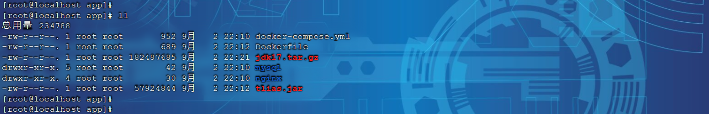
注意，资料中提供的Dockerfile文件中的阿里云OSS的 AccessKeyId，AccessKeySecret需要替换成自己的。
3). 执行如下指令，基于DockerCompose部署项目。
docker compose up -d
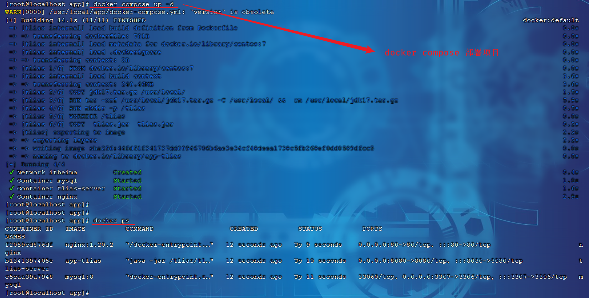
项目启动完毕之后，就可以启动服务器测试喽 。
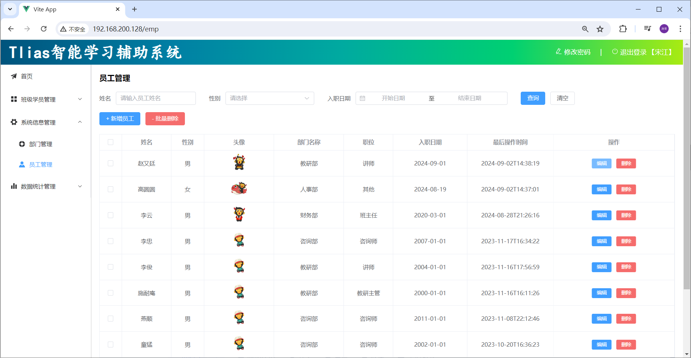
附录：Docker安装
卸载旧版
首先如果系统中已经存在旧的Docker，则先卸载：
yum remove docker \
docker-client \
docker-client-latest \
docker-common \
docker-latest \
docker-latest-logrotate \
docker-logrotate \
docker-engine \
docker-selinux
配置Docker的yum库
首先要安装一个yum工具
sudo yum install -y yum-utils device-mapper-persistent-data lvm2
安装成功后，执行命令，配置Docker的yum源（已更新为阿里云源）：
sudo yum-config-manager --add-repo https://mirrors.aliyun.com/docker-ce/linux/centos/docker-ce.repo
sudo sed -i 's+download.docker.com+mirrors.aliyun.com/docker-ce+' /etc/yum.repos.d/docker-ce.repo
更新yum，建立缓存
sudo yum makecache fast
安装Docker
最后，执行命令，安装Docker
yum install -y docker-ce docker-ce-cli containerd.io docker-buildx-plugin docker-compose-plugin
启动和校验
# 启动Docker
systemctl start docker
# 停止Docker
systemctl stop docker
# 重启
systemctl restart docker
# 设置开机自启
systemctl enable docker
# 执行docker ps命令，如果不报错，说明安装启动成功
docker ps
配置镜像加速
镜像地址可能会变更，如果失效可以百度找最新的docker镜像。
配置镜像步骤如下：
# 创建目录
rm -f /etc/docker/daemon.json
# 复制内容
tee /etc/docker/daemon.json <<-'EOF'
{
"registry-mirrors": [
"http://hub-mirror.c.163.com",
"https://mirrors.tuna.tsinghua.edu.cn",
"http://mirrors.sohu.com",
"https://ustc-edu-cn.mirror.aliyuncs.com",
"https://ccr.ccs.tencentyun.com",
"https://docker.m.daocloud.io",
"https://docker.awsl9527.cn"
]
}
EOF
# 重新加载配置
systemctl daemon-reload
# 重启Docker
systemctl restart docker